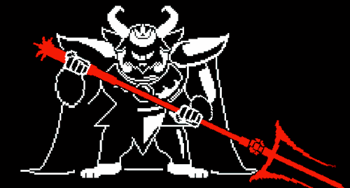

Rey de los Monstruos
Asgore Dreemurr es el Rey de los Monstruos, un personaje icónico del videojuego Undertale (2015) creado por Toby Fox. Es el antagonista principal de la historia, encargado de cumplir una misión que lo define como un monarca destinado a proteger a su pueblo, aunque a través de métodos controvertidos.

Asgore Dreemurr es el Rey de los Monstruos y el principal antagonista de Undertale. Como monarca del reino subterráneo, lleva sobre sus hombros el peso de una decisión terrible: la promesa de matar a todo humano que caiga al Monte Ebott.
Una vez fue un monarca compasivo, esposo de Toriel y padre del príncipe Asriel. Sin embargo, tras la muerte de su hijo a manos de humanos asustados, Asgore hizo un juramento que lo transformaría en leyenda: recolectaría seis almas humanas para romper la barrera mágica que aprisiona a su pueblo.
A pesar de su terrible propósito, Asgore sigue siendo un ser honorable y nostálgico, recordando los días de paz. Su gran espada ardiente y su majestuosa presencia lo convierten en uno de los enemigos más icónicos del juego.